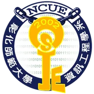

GEMO3D：結合深度學習感知、相機幾何與投影高度比例補償之單目 3D 車輛偵測方法
將深度學習感知、相機幾何與投影高度比例補償整合成可解釋的單目 3D 車輛偵測流程，並於 CARLA 場景評估。
- 3D 中心誤差
- 0.25 m
- BEV IoU
- 0.82
- 推論速度
- 31.12 FPS
OPEN TO COLLABORATION · 2026
彰師大資訊工程學系學生，現於 TMYTEK 擔任研發實習生，預計加入工研院研究團隊。
Live in the moment. Stay curious.
ABOUT 01
我在彰師大就讀資訊工程學系，關注 AI 應用、軟體測試與產品實作。目前在 TMYTEK 參與研發與驗證工作，也將於工研院展開研究實習，並擔任『人工智慧及其應用』課程助教。我喜歡把問題拆解成可測試的步驟，透過專案與競賽把想法變成成果。
RESEARCH 02
將深度學習感知、相機幾何與投影高度比例補償整合成可解釋的單目 3D 車輛偵測流程，並於 CARLA 場景評估。
EXPERIENCE 03


EDUCATION & COMMUNITY 04
Academic background and community leadership
大學日間部 · 大三在學中

協助規劃與執行系上大型活動，負責現場協調與支援。

管理社團電腦設備與技術支援，協助辦理程式工作坊與技術交流。
轉學生交流平台主要負責人之一，負責對外聯繫、活動宣傳與社群經營。

參與跨校技術交流、DevFest Taipei 2024、SITCON 2025 與 COMPUTEX。
COMPETITIONS 05